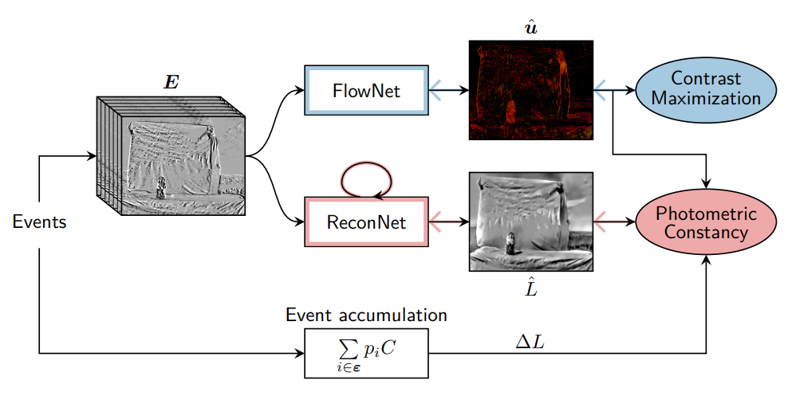
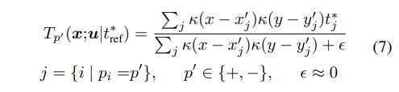
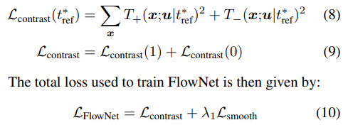
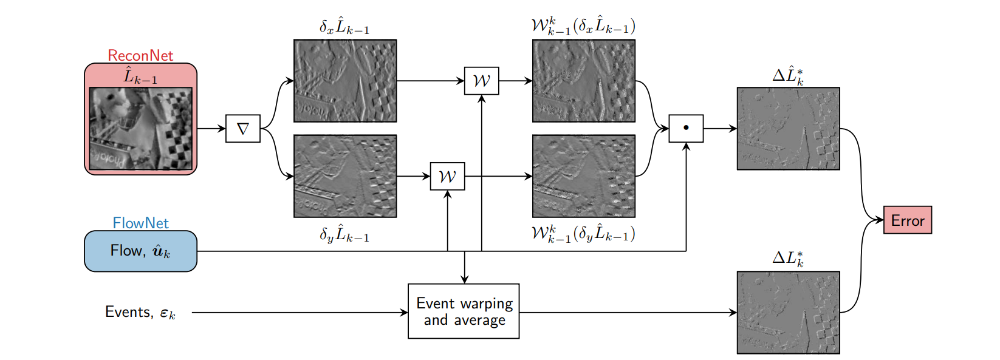

Back to Event Basics:Self-Supervised Learning of Image Reconstruction
Back to Event Basics: Self-Supervised Learning of Image Reconstruction for Event Cameras via Photometric Constancy
Abstract：
我们的方法是第一个从自监督角度做重构的。我们的方法利用事件相机内部的工作原理，将估计的光流与事件的光度恒常性（photometric constancy）结合来训练网络，不需要ground truth与模拟数据。多个数据集实验表示，提出的自监督方法与sota性能一致。此外，我们提出一种新的轻量级光流估计神经网络，实现高速推理，但在性能上有轻微下降。

分别用contrast maximization proxy loss和photometric constancy进行光流估计与图像重建。
3. Method
独立像素的亮度变换信号, 单个事件, 其中，当超过阈值时，产生事件。发生在一个时间窗口内的亮度变化通过像素积累编码在事件数据中：
像[1]中描述的一样，基于Lambertian surfaces，constant illumination（恒定光照）以及小，能够将上式线性化，得到基于事件的photometric constancy（光度恒常性）：
其编码的事件是由亮度信号的空间梯度（spatial gradient）引起的，，随光流运动，公式中的点积表明，如果flow vector与edge平行，即与梯度垂直，则不产生事件；若是垂直，即与梯度平行，则产生事件的速率最高，因此，事件是由光流向量（optical flow vector）在方向上的投影引起的。
input representation：
voxel grid，详见e2vid
Optical Flow via Contrast Maximization：
我们要利用2式中的光度恒常性来重建L，除了自身brightness的时间空间上的导数，还依赖于光流u，我们可以用gt光流来解决这个不适定问题。然而由于事件相机获取gt难度非常大，因此我们训一个FlowNet，用自监督的方式来进行光流估计。利用contrast maximization proxy loss（对比度最大化代理损失）进行运动补偿。
论文：A unifying contrast maximization framework for event cameras, with applications to motion, depth, and optical flow estimation
当事件存在spatiotemporal misalignment（时空错位）时，这部分事件就是模糊的，即相同的移动边缘生成的事件由不同的时间戳与像素位置捕捉。运动补偿框架[2]背后的思想是，可以通过找到每个事件的运动模型来估计精确的光流，以此达到最好的去除模糊，得到了像素的光流，事件可以通过以下方式传播到参考时间：
在这个工作中，我们采用zhu哥[3]中改进的去模糊质量度量：image of warped events（IWE）结果图像的逐像素逐极性平均时间戳H，该指标质量越低，去模糊效果越好。像[3]一样，我们用双线性插值为每像素每极性生成了平均（归一化）时间戳的图像：

然后最小化由前后warping事件得到的平方图的和，以防止反向传播期间的缩放问题：

其中是 Charbonnier smoothness prior，是平衡二损失的标量，注意到，不会在没有事件的情况下将错误传播给像素，因此我们屏蔽了FlowNet的输出，以便于在这些像素位置返回零光流向量。
Reconstruction via Photometric Constancy
我们从图像配准角度出发，通过brightness increment图像来阐述SSL重建问题，具体而言，用参考increment图像 （事件积分，公式1），与预测的（光度恒常性，公式2）之间的不同来重建brightness signal最能够解释输入事件，假设没有光流误差。重建的brightness用表示，FlowNet预测被用于计算，并作为registration参数，将两increment图像warp成一个共同的temporal帧（由上标*表示），所提出的公式如图2所示：

[1] Event-based camera pose tracking using a generative event model
[2] Unsupervised Event-based Learning of Optical Flow, Depth, and Egomotion